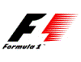

Sveiki!
Malonu, kad apsilankėte mūsų svetainėje.
Puslapio įkurimas:
Suradus kūrybinę grupę puslapis buvo įkurtas 2005/5/23.
Turnyro administracinės veiklos ėmėsi Valentinas Rudys (Massa) ir Andrius Balilionis (Webster).
1 sezonas:
Pirmojo sezono metu pilotai lenktyniavo net keturiuose serveriuose ir net keturias
dienas. Įpusėjus pirmam sezonui prie turnyro adminisracinės veiklos prisijungė
dar keli žmonės tai Mobil 1 ir Sfinxs. Sezono viduryje pilotai jau lenktyniavo
tik dvejuose serveriuose. Dėl susiklosčiusių konfliktinių situacijų iš turnyro
pasitraukė Mobil 1, tačiau jį pakeitė labai nuostabus ir puikiai IT sritį išmanantis žmogus - Fixamer.
Sezonas baigėsi, o čempiono titulą nusinešė Dark.
Prieš pradedant naują sezoną buvo atsisakyta komandų
vadovų. Komandas valdė FIA, bei komandos primasis pilotas, toks komandos
valdymas išliko iki dabar.
2 sezonas:
Antrasis sezonas prasidėjo su griausmu, buvo rastas
galingas serveris ir visi pilotai jau lenktyniavo viename serveryje.
Technologijoms tobulejant serverio kūrimu pradėjo užsiimti Rytis Dragauskas (Fosbis). Jo pagalba buvo labai
reikiama užtikrinant kokybišką serverio darbą. Vėliau į administracijos komandą
buvo priimti Schums ir Semuelis. Šie moderatoriai puikiai atlikdavo savo juodą
darbą ir palengvindavo darbo krūvį, tenkantį administratoriams. Dėja, bet dėl laiko stokos iš
turnyro netikėtai pasitraukė dėl pirmos vietos asmeninėje, bei komandų iškaitoje
kovojęs Fixamer. Šio labai greito ir prespektyvaus piloto netekimas sumažino intrigą kovoje dėl čempiono titulo.
Sezonui baigiantis iš jo pasitraukė ir kitas adminisratorius Sfinxs, bet kiti
turnyro rengėjai puikiai atliko savo darbą ir turnyras toliau tęsėsi. Likus
paskutinėms sezono lenktynėms Brazijojoje vyko arši kova tiek asmeninėje tiek
pilotų iskaitose A ir B lygose. A lygoje aršiausia kova vyko komandinėje
įskaitoje kurioje dėl 3 vietos kovojo net keturios komandos. O čempionu asmeninėje įskaitoje
iškovojęs net aštuones pergales ir septynias antrasias vietas tapo PooKoo.
Šie pirmieji sezonai lektyniaujant virtualioje erdvėje buvo pirmas žingsnis į tai kas vėliau tapo virtualiu Lietuvos F1 čempionatu.
Įvykusių čempionatų statistiką galite pamatyti čia
Kūrybinė grupė:

Slapyvardis: WebsterVardas Pavardė: Andrius Balilionis
Amžius: 22
Pareigos: Puslapio savininkas, vyriausias administratorius.
E-mail: admin[eta]lrc.lt
Slapyvardis: Brylius
Vardas Pavardė: Andrius Stankevičius
Amžius: 27
Pareigos: Moderatorius
E-mail: brylius[eta]delfi.lt
Slapyvardis: Fixamer
Vardas Pavardė: Marijus Jašinskas
Amžius: 25
Pareigos: Žmogus užsiimantis viskuo.
E-mail: fixamer[eta]gmail.com
Slapyvardis: Under
Vardas Pavardė: Vaidas Balčiūnas
Amžius: 25
Pareigos: Kėbulinių lenktynių organizatorius.
E-mail: balciunas.v[eta]gmail.com
Slapyvardis: Katonas
Vardas Pavardė: Mindaugas Klumbis
Amžius: 27
Pareigos: Vyriausias teisėjas, administratorius.
E-mail: katonasf1[eta]yahoo.com
Slapyvardis: gotmilk?
Vardas Pavardė: Vygintas Kuprys
Amžius: 26
Pareigos: Naujienu redaktorius.
E-mail: vygintaskuprys[eta]gmail.com
Slapyvardis: Tiltas
Vardas Pavardė: Laimis Jankauskas
Amžius: 43
Pareigos: Techninis darbuotojas.
E-mail: admin[eta]e-tiltas.lt